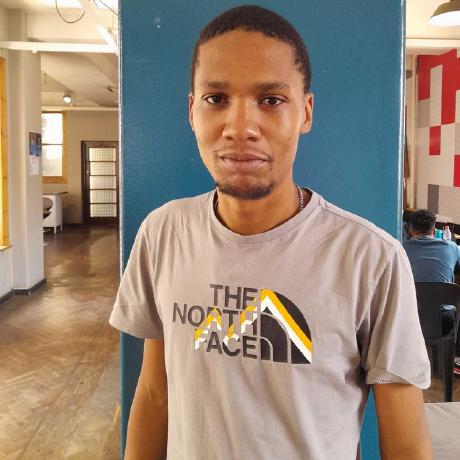

Featured Project Showcase: Ubuntu Book Store Demonstration
Kubheka Ntokozo
Your bio - I am a dedicated Full-Stack Software Developer with an analytical background holding a BSc in Mathematics with Informatics. With hands-on internship experience optimizing corporate application layers and implementing strict architecture standards, I thrive on building secure, distributed software solutions.
From engineering backend architectures in ASP.NET Core and Java to building responsive frontends in React and Angular, I love turning complex business requirements into clean, scalable software systems.
